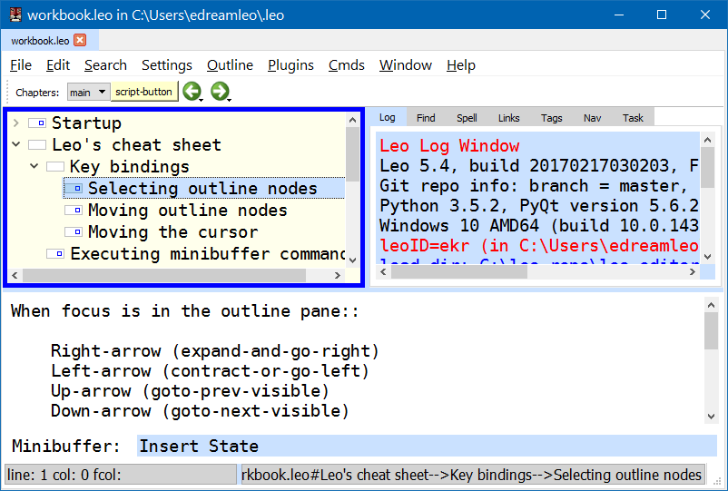

Leo 中文首页
"Leo 是迈向正确编程最革命性的一步."―Brian Takita
"Leo 是我体验过最舒爽的 IDE. 它不仅彻底改变了我编程的方式, 而且改变了我存储和组织工作所需信息的方式."―Ian Mulvany
"出于好奇, 打开 Leo. 体验过后, 再回不去. 爱不释手, 休想撬走!"―Travers A. Hough
"Leo 是文学化编程操作体验最舒服的综合编辑环境."―Zoom.Quiet
Leo 是 PIM, IDE 和提纲编辑器, 可加速程序员, 作家和网页设计师的工作流. 提纲节点可出现在多处, 允许数据的多种组织形式出现在同一提纲中.
欢迎提问, 相约
leo-editor Google 网上论坛.
欢迎寄信, 介绍如何使用 Leo. 谢谢!
下面是 Leo 主窗口的截屏:


目录: 画狮点睛!
教程
文档
截屏
视频
幻灯
#leo IRC
Leo Google 网上论坛
Leo GitHub 仓库
LeoVue, 作者 Joe Orr
代码片段
Readthedocs (API)
提交 bug
更多链接...
使用引号(如 "@file") 或其他标记.